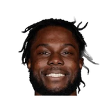

Celtics: Semi Ojeleye on Brad Stevens asking him to become even more versatile defensively:
“It’s just realizing that you CAN have that impact ... It’s a different mindset, but it’s something I can do.”

Brad Stevens on Semi Ojeleye, and Semi Ojeleye on Brad Stevens: every quote in the archive, newest first. Each one links to its original source.
Celtics: Semi Ojeleye on Brad Stevens asking him to become even more versatile defensively:
“It’s just realizing that you CAN have that impact ... It’s a different mindset, but it’s something I can do.”
Semi Ojeleye on Brad Stevens:
“When he’s not coaching, he’s just a guy that you wouldn’t even think coaches the Celtics. He’s just so approachable.”
Stevens on Semi Ojeleye in Game 5:
“Semi probably played more minutes than I would have anticipated, but it was one of those games where even when we couldn’t get shots to fall you felt like your identity was on the other end of the floor in that game, in that night.”